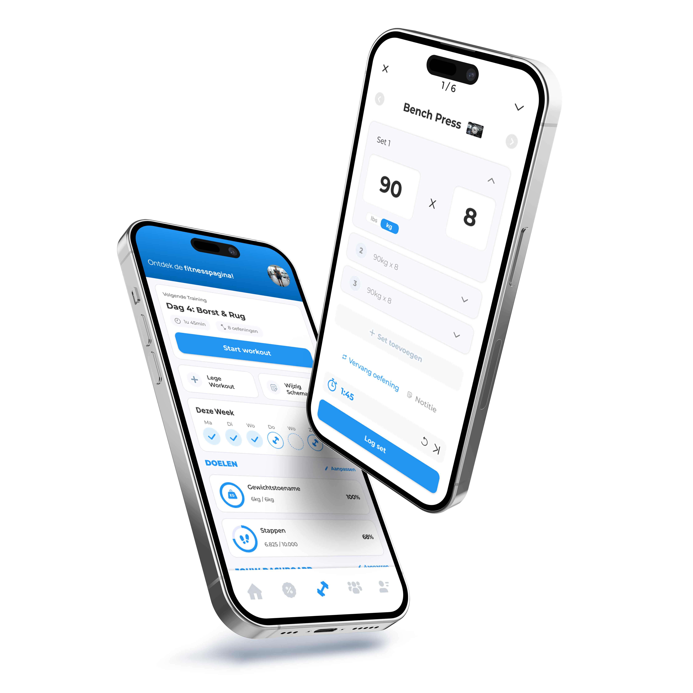

Laten we samen iets sterks neerzetten. Neem contact op en ontdek wat ik voor jouw merk kan betekenen.
Neem contact opVoor Sportpoeder werk ik al langere tijd aan het UX design van de app. Een onderdeel hiervan was ook om de nieuwe logfunctie volledig te herontwerpen. Hiervoor heb ik veel onderzoek uitgevoerd om dit tot een groot succes te maken. Een onderdeel hiervan was ook om de nieuwe logfunctie volledig te herontwerpen.
Bekijk project